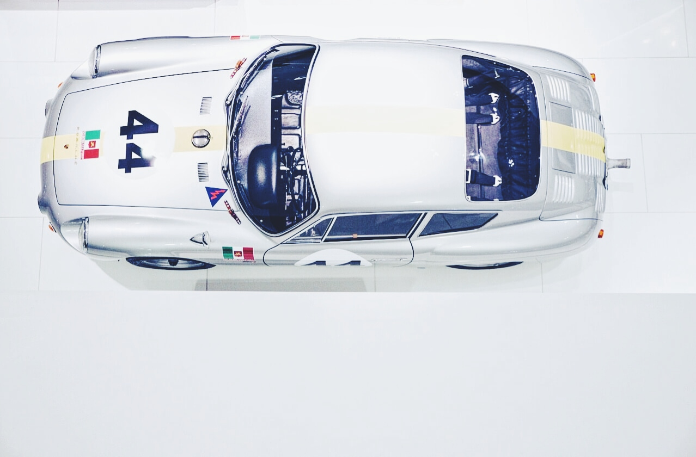

Porsche Museum
The Porsche ideal
Designed by Delugan Meissl Associated Architects, the Porsche Museum in Zuffenhausen, Stuttgart was opened on 31st January 2009, its floating monolith appearance is built on just three V-shaped columns.
The building looks different from every angle, thanks to the polygonal forms and the variation in the structures and windows. A dynamic sculpture designed by the British artist Gerry Judah sits opposite the entrance consisting of three 36m tall pillars, each crowned with a Porsche 911. The vehicles are from three of the 911 generations. Surrounding this industrial area are a Porsche dealer and the buildings manufacturing the 911.

After browsing the foyer which houses a museum workshop, a small cafe and shop packed with scale models, a ramp leads up to the main floor. Inside the museum, there are more than 80 cars from the 356 onwards including race cars and prototypes. The story of Ferdinand Porsche is told in chronological order as you follow around the displays.
The museum often holds special installations based on famous drivers like Walter Rohrl, vehicles like the 944 or other themes. There are always some amazing cars on display regardless of when you visit from the World Endurance winning 919 hybrid to the Safari rally special to a road-going RS worth many millions of Euros.
Depending on your interest, there is at least an hour's worth of viewing and then another hour deciding on what scale model to buy. Once you are finished in the museum the Porsche dealer often has some special models tucked away around the back and if you opt for a factory tour you can see new models being made on the fascinating production line.
If you enjoyed this story
Consider supporting us with a donation or by buying a publication - It's how we continue to post stories and photographs without advertising.